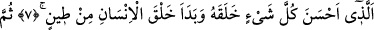
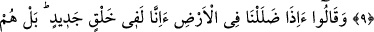
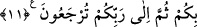
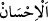

YARATTIĞI HER ŞEY GÜZEL
7. O (Allah) ki, yarattığı her şeyi güzel yapmış ve insanı yaratmaya da çamurdan
başlamıştır.
8. Sonra onun neslini de bir öz sudan, değersiz bir sudan yaratmıştır.
9. Sonra onu tamamlayıp şekillendirmiş, ona kendi ruhundan üflemiştir. Ve sizin
için kulaklar, gözler, kalbler yaratmıştır. Ne kadar az şükrediyorsunuz!
10. “Toprağın içinde kaybolduğumuz zaman, gerçekten (o vakit) biz mi yeniden
yaratılacağız?” derler. Doğrusu onlar Rablerine kavuşmayı inkâr etmektedirler.
11. De ki: Size vekil kılınan (bu konuda görevlendirilen) ölüm meleği canınızı
alacak, sonra Rabbinize döndürüleceksiniz.
“O (Allah) ki, yarattığı her şeyi güzel yapmış…”
Râğıb der ki: “__WORD__ kelimesi iki türlü kullanılır: Birincisi, bir başkasına iyilikte
bulunmak ve ona nîmet bahşetmek anlamındadır. İkincisi ise işini güzel yapmak
demektir. Meselâ bir ilim öğrenecekse, onu güzelce öğrenmek; bir amel işleyecekse onu
da güzel bir şekilde yapmaktır. Emîru’l-mü’minîn Ali (r.a.)’ın şu sözü, bu ikinci
anlamda kullanılmıştır: “İnsanlar, yaptıkları ihsâna göre değerlendirilirler.” Yâni,
herkes yaptığı güzel amellere nisbetle bir değer elde eder, demektir.
Buna göre âyetin anlamı şöyle olur: Allah Teâlâ, yarattığı her şeyi, istîdâdı her neyi
gerektiriyor ve hikmet neyi îcâb ettiriyorsa ona göre hem şekil ve hem de mânâ
îtibariyle güzel bir şekilde yaratandır. Yarattığı her şeyi güzel eyledi. Yâni, hikmetine
uygun en iyi şekilde süsledi, tezyin etti.
Dünyâda bir şey ne şekilde olması gerekirse,
O şekliyle halk etmişsin
Ey Allahım, bütün işler senin lütfunla güzel oldu,
Zira her şeyin yaratıcısı sensin.
Yer üzerine işlenmiş güzel nakışlar Sen’dendir.